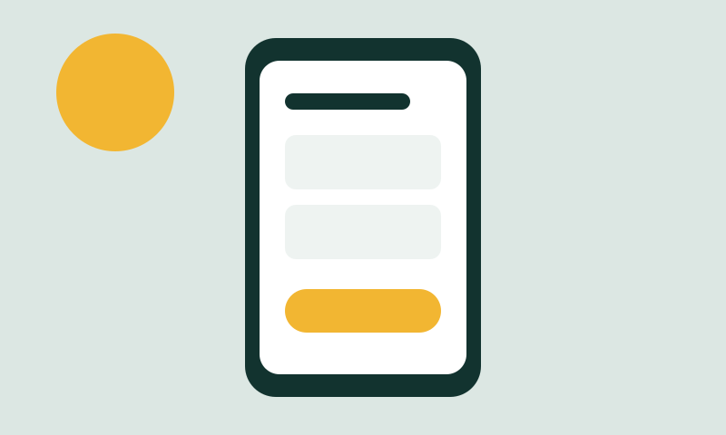
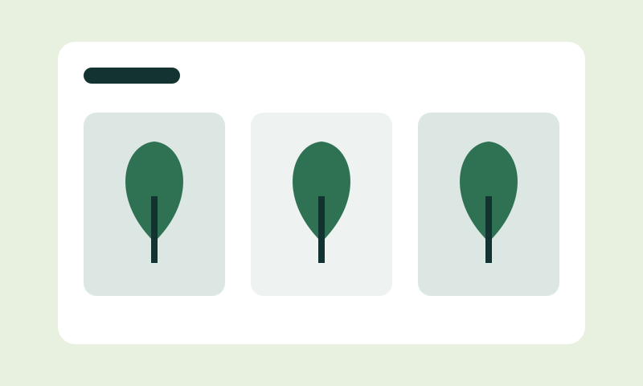
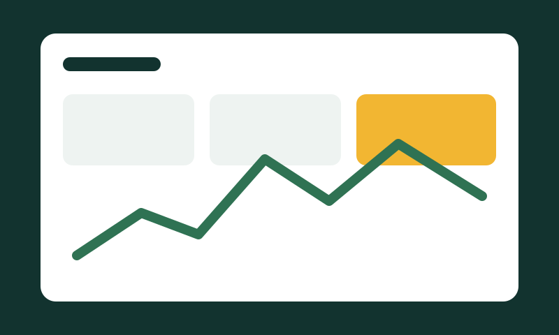
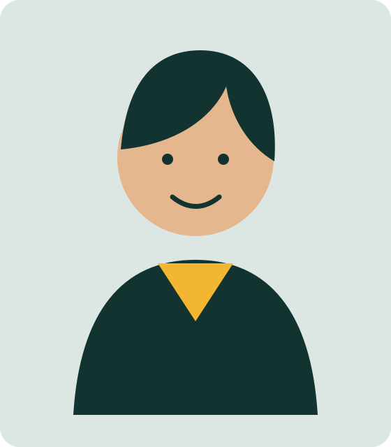

Diseño UX
Investigo, ordeno la información y valido con usuarios.
Disponible para pasantías · Argentina (GMT-3)
Diseñador UX/UI
Convierto procesos confusos en pantallas que se entienden a la primera, probadas con personas reales.
Investigo, ordeno la información y valido con usuarios.
Sistemas visuales coherentes, con contraste y jerarquía.
Maqueto lo que diseño, fiel al prototipo y accesible.

Rediseño del flujo para pedir un turno desde el celular.
Resultado: el flujo pasó de 7 a 4 pasos en el test.

Catálogo y checkout para un vivero local.
Aprendizaje: filtrar menos categorías mejora la búsqueda.

Dashboard simple para entender en qué se va el dinero.
Aprendizaje: menos gráficos, más lectura rápida.
2024 – hoy
FCyT, Sede Concepción del Uruguay
2025
Plataforma online
2024
ONG local

Soy estudiante de Sistemas de Información y diseño interfaces desde primer año. Me interesa que la tecnología sea fácil de usar para cualquiera, sin manual.
Una opinión se confirma con usuarios.
Contraste y teclado desde el primer boceto.
Cada elemento tiene un solo trabajo.
Escribime y te respondo en menos de 48 horas.
felipelihuelreinoso@gmail.com